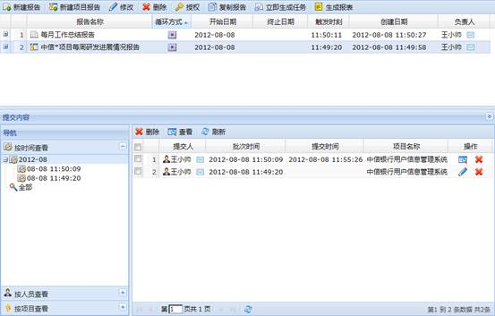
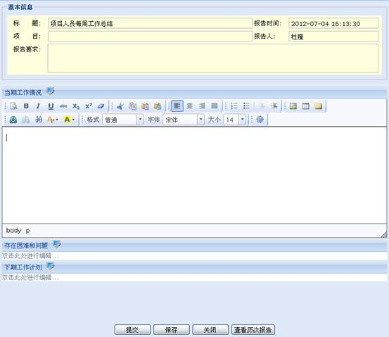
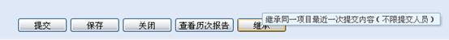
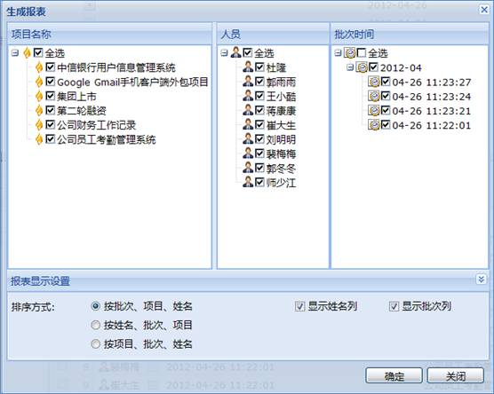

点击查看如何创建定期报告？
定期报告分为报告和项目报告两种，整体界面如下图所示：

图 定期报告主界面
1、新建报告
通过工具栏的“新建报告”按钮添加报告，通过工具栏的“新建项目报告”添加项目报告。
注意:
1、“新建报告”与“新建项目报告”不同之处在于“项目报告”与项目相关，报告人也是项目人员。
2、如果新建报告时，填写的开始时间和启动时间是过去的时间，那么该报告将不生成；填写的开始时间和启动时间是将来的时间，那么到时间该报告将生成并发送给相关人员，相关人员登录系统后，将在首页任务侧边栏看到自己的任务。
3、新建报告时，若选中“允许参与人员项目查看报告”，则报告参与人员可在个人中心通过点击“查看公共报告”按钮查看其他人的报告。
2、修改报告
在报告列表中选择一个报告，通过工具栏或右键菜单的“修改”修改。
3、复制报告
在报告列表中选择一个报告，通过工具栏或右键菜单的“复制报告”复制。
4、删除报告
在报告列表中选择一个报告，通过工具栏或右键菜单的“删除”删除。
在报告列表中选择一个报告，通过工具栏或右键菜单的“授权”为他人授权。
授权主要负责对报告进行读写控制。权限分“读”、“写”以及“读写”三种，只有拥有权限的人才能看到该报告并进行权限范围内的操作，创建人默认拥有“读写”权限。
1、处置报告
报告的处置人在主页侧边栏点击“任务”，弹出“我的任务”页面，在该界面的临时任务“待处理”中显示要处理的报告，点击标题链接进入处理报告界面，填写相应内容并提交。也可以直接点击主页侧边栏的报告链接进入处理报告界面。处理报告界面如下图所示：

图 填写报告界面
其中，项目报告提交的时候多了一项继承选项，可以继承同一项目最近一次提交内容。如下图项目报告提交所示：

图 项目报告提交
注:
此功能需要在新建项目报告时勾选“允许同一项目组内人员相互查看报告”。
2、查看报告
处置人提交报告后，报告分派人可以通过报告列表工具栏或右键菜单的“查看”按钮查看该报告的详细内容；查看报告时还可以将报告反馈给提交人（即报告的处置人）重新修改。
3、删除报告
通过报告列表工具栏或右键菜单的“删除”按钮删除报告。
4、查询报告
有三种查询方式：按批次时间、人员、所属项目查询。其中只有项目报告才能按照所属项目进行查询。
报告处理人提交报告后，在报告列表中选择工具栏或右键菜单的“生成报表”，在弹出的生成报表界面选择相应的条件生成报表，如下图所示：

图 生成报表界面
在报告列表中选择一个报告，通过工具栏或右键菜单的“立即生成任务”，此时被选报告的报告列表中生成了一个生成时间为当前系统时间的报告。